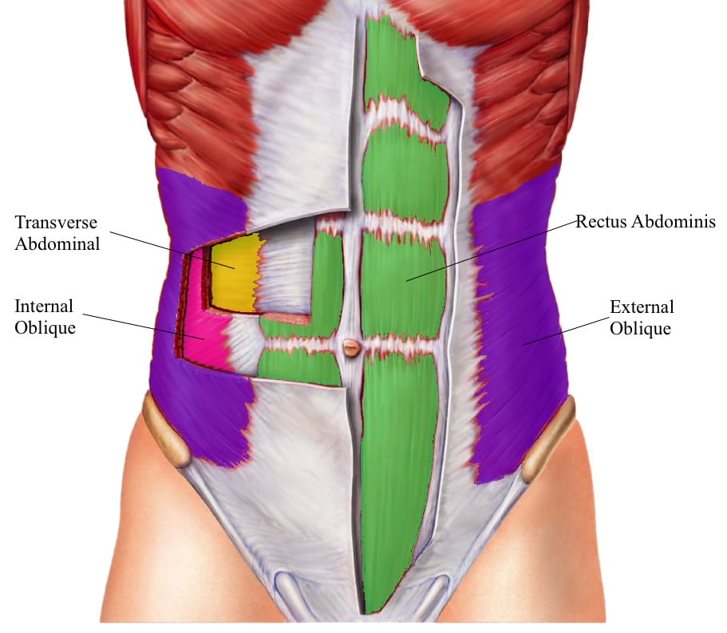
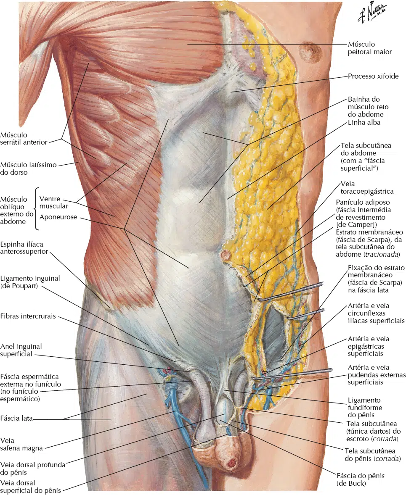
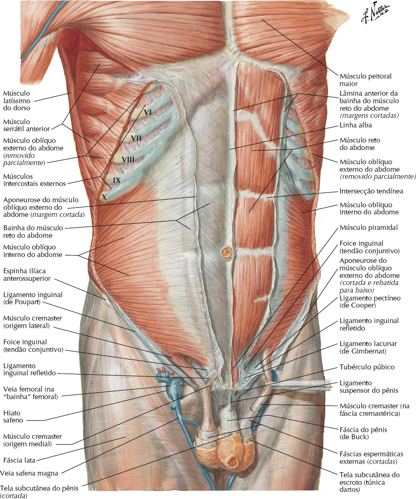
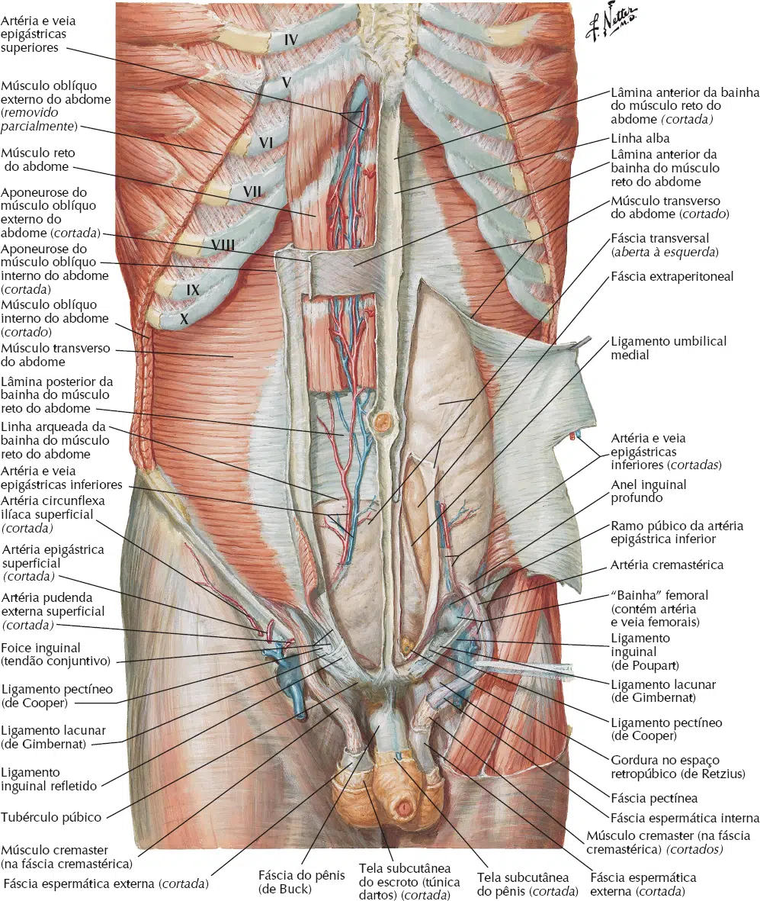
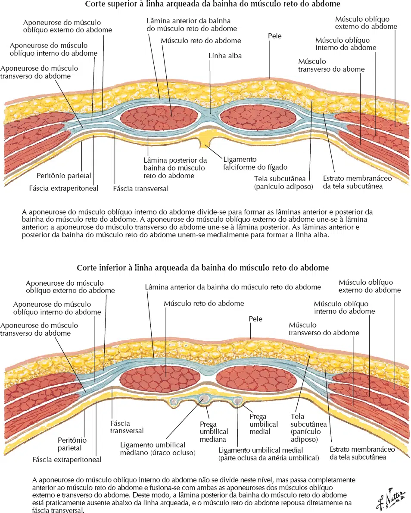
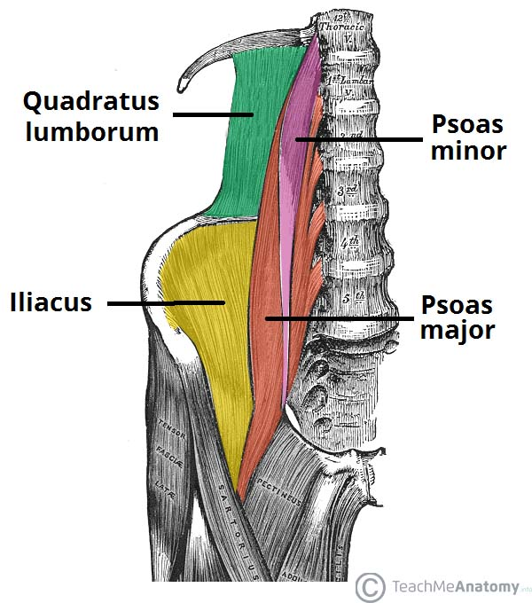
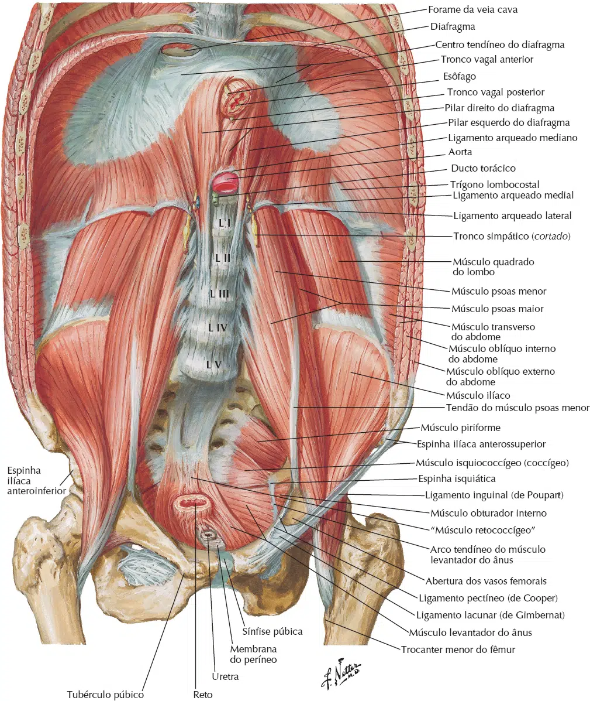

A parede do abdome é um receptáculo dinâmico e flexível, situado entre o tórax e a pelve.
Ela é formada por músculos, suas aponeuroses, fáscias, pele e tela subcutânea.
A parede anterolateral do abdome estende-se da caixa torácica inferior (cartilagens costais VII a X e processo xifoide) até a pelve (ligamento inguinal e cristas ilíacas).
É composta por cinco pares de músculos: três planos e dois verticais.
As fibras musculares dessas três camadas seguem em direções diferentes, conferindo grande força à parede.
Anterior e medialmente, esses músculos continuam como aponeuroses fortes que formam a bainha do músculo reto do abdome.




Estão contidos na bainha do reto.
As aponeuroses dos três músculos planos se entrelaçam na linha mediana, formando a Linha Alba, que se estende do processo xifoide até a sínfise púbica.
A Bainha do Músculo Reto do Abdome é o compartimento fibroso que envolve os músculos verticais.

A parede posterior do abdome é menos distensível e é reforçada pela coluna vertebral.
Os principais músculos pareados são:


{kind=link}
{kind=link}
{kind=link}